1. ЭЛЕКТРОСТАТИКА
1.2. Закон сохранения заряда1.3. Закон Кулона
1.4. Характеристики электрического поля
1.5. Разность потенциалов или напряжение
1.6. Закон суперпозиции для потенциала
1.7. Связь между напряженностью и потенциалом
1.8. Эквипотенциальные поверхности
1.9. Теорема Остроградского- Гаусса
1.10. Теорема Гаусса
1.10.1. Теорема Гаусса для системы точечных зарядов
1.10.2. Применение теоремы Гаусса к расчетам электростатических полей
1.11. Проводник в электрическом поле
1.12. Свойства проводников
1.13. Индуцирование заряда
1.14. Проводник во внешнем электрическом поле
1.15. Электроемкость проводника
1.16. Соединение конденсаторов
1.17. Энергия электростатического поля
1.17.1. Энергия плоского конденсатора
1.18. Диэлектрики
1.18.1. Свойства диэлектриков
1.18.2. Поведение диэлектриков во внешнем электрическом поле
1.19. Поток вектора электрического смещения
1.20. Сегнетоэлектрики и их свойства
1.20.1. Электрический гистерезис в сегнетоэлектриках
1. Электростатика
Электростатика - раздел физики, изучающий взаимодействие неподвижных зарядов; или взаимодействие зарядов в начале перемещения (если оно есть) и в конце него.
Заряд - особое свойство материи, заключающееся в притяжении или отталкивании тел друг от друга вне зависимости от гравитационных свойств.
Элементарный заряд:
qэ=1,6· 10-19 Кл, = > заряд электрона, обозначается e, исторически принято считать отрицательным.
e = -1,6· 10-19 Кл - это наименьшее количество заряда, которое может иметь материальное тело. Масса электрона, как материального тела:
mэ=9,1· 10 -31 кг - масса электрона.
[q]=1 Кл численное значение в международной системе единиц – СИ.
Принято исторически заряд электрона считать со знаком "-" . То есть тело считается "+" заряженным, если в нем наблюдается недостаток электронов, и "-" заряженным, если в нем имеется избыток электронов. Вблизи зрядов наблюдают электрическое поле.
Электрическое поле указывает на наличие зарядовых свойств у физических тел. Принято электрическое поле характеризовать силовыми линиями и линиями потенциалов. Силовые линии указывают действие со стороны электрического поля на испытываемый заряд. Силовые линии указывают на силу, действующую на "+" пробный qпр точечный заряд (точечный - пренебрегают размерами, пробный – для проверки наличия поля).
Силовые линии, сформированные у " +" заряда, направлены по радиусу от заряда в ¥. Для отрицательно заряженного тела силовые линии направлены по радиусу от ¥ к заряду.
1.2. Закон сохранения заряда
При исследовании взаимодействия зарядов установлено, что одноименно заряженные тела - отталкиваются, а разноименно заряженные - притягиваются. Известно, что в замкнутой системе количество массы вещества остается неизменным. А так как свойство заряда несут тела, обладающие массой, то также можно сказать: для замкнутой системы количество заряда остается величиной постоянной.
Если в замкнутой системе существует несколько зарядов разных знаков, то силовые линии начинаются на положительном заряде и оканчиваются на отрицательном.
1.3. Закон Кулона (1785 г.)
Сила взаимодействия между заряженными телами прямо пропорциональна зарядам этих тел и обратно пропорциональна квадрату расстояния между ними:
,
где
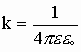,
k ~ f (среды)
eо=8,85· 10-12 [Ф/м] - электрическая постоянная.
e - характеристика среды, называется - диэлектрическая проницаемость.
e - имеет электрический характер и определяет во сколько раз взаимодействие между одинаковыми зарядами, расположенными на одинаковом расстоянии друг от друга в среде меньше, чем аналогичное взаимодействие в вакууме.
e в-х = 1,00013 - в воздухе.
e вак = 1 - в вакууме, соответственно:
.
Во всех остальных средах e ср >1.
1.4. Характеристики электрического поля
Напряженность поля точечного заряда.
Поле, создаваемое зарядом Q, действует на q’пр с силой
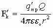,
,
тогда на заряд q’’ действует сила
.
Аналогично для другого заряда
.
Однако отношение силы к заряду всегда остаётся постоянным:
Е - величина напряженности электрического поля, создаваемого зарядом Q на расстоянии r. Чтобы рассчитать напряженность Е от нескольких зарядов применяют принцип суперпозиции.
Суперпозиция - воздействие однородных объектов на исследуемый или пробный объект (касается любых взаимодействий). Суть принципа суперпозиции - исследуется влияние одного изолированного объекта q1 на искомый qпр независимо от других зарядов, затем влияние второго изолированного объекта q2 на искомый qпр и т.д. Затем результат суммируется векторно (см. рис) или скалярно (см. формулы), пока не задействуются все заряды.
;
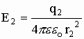;
;
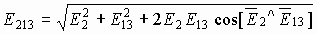 и т.д.
Силы рассчитываются аналогично.
Пример: Определить напряженность поля, созданного зарядами, расположенными в вершинах квадрата, в одной из вершин квадрата. Q=q1=q2=q3, a - сторона квадрата.
В векторной форме имеем:
 , .
, .
Если напряженности от каждого заряда
,
то из геометрии имеем
,
и окончательно
.
Потенциал - энергетическая характеристика электрического поля, указывающая на способность поля перемещать заряды в пространстве. Если траектория перемещения заряда (от точки 1 к точке 2) носит произвольный характер, то разбиваем ее на малые участки r® 0 ® dr, тогда работа на каждом участке:
.
Работа на участке (1-2):
Это численное значение работы по переносу пробного заряда из (1) в (2). Если пробный заряд перемещается из данной точки поля r1 в ¥ , то
А если менять величину пробного переносимого заряда, то получаем отношение работы к величине переносимого заряда как величину постоянную, не зависящую от пробного заряда:
.
Для данного заряда, формулирующего поле, отношение работы к величине переносимого заряда из данной точки поля в бесконечность является характеристикой заряда, формирующего поле, и есть величина постоянная. Это отношение и есть энергетическая характеристика электрического поля и называется потенциалом данной точки поля, созданного зарядом Q.
.
1.5. Разность потенциалов или напряжение
Если в выражении работы по переносу заряда r2 ¹ ¥ , то, выполняя последовательные преобразования, получим:
Разность потенциалов между двумя точками электрического поля называется напряжением:
.
1.6. Закон суперпозиции для потенциала
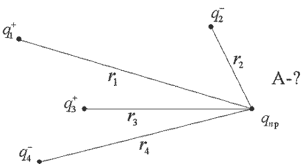Если система зарядов замкнута, то работа по перемещению пробного заряда в бесконечность со стороны каждого заряда системы:
Разделим Аi¥ на qпр, получим систему уравнений:
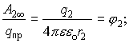

. .
.
Если учесть знаки зарядов, составляющих данную систему, то получим:
Поскольку под знаком суммы стоит алгебраическая сумма, то величина
jрез - есть скаляр и он определяется как алгебраическая сумма потенциалов, составляющих данную систему.
.
Единица измерения потенциала:
, dim φ = .
А1¥ = qпр× j1 , если пробным зарядом является электрон, а потенциал j =1В, то
- это не системная единица измерения работы или энергии, однако широко используемая в микромире.
1.7. Связь между напряженностью и потенциалом
Если закон перемещения пробного заряда неизвестен, то для определения работы разбиваем траекторию на участки r® 0, в пределах которых действующая сила остается постоянной, определяем работу для этих участков и результат суммируем. На участке r разность потенциалов составляет j (или dr и dj соответственно). Тогда запишем
А зная, что напряженность
,
 - это связь напряженности и потенциала для неоднородного поля.
- это связь напряженности и потенциала для неоднородного поля.
Если поле однородно, т.е. на каждую единицу длины изменение потенциала остается постоянным, то:
.
,
где E - напряженность, U - напряжение.
Размерностью для напряженности служат
.
1.8. Эквипотенциальные поверхности
Вблизи любого геометрического тела (заряженного) всегда можно определить совокупность точек, потенциалы которых одинаковы. Естественно, основной такой совокупностью точек является поверхность заряженного тела. Вдали от поверхности тела совокупностей точек с равным потенциалом может быть сколь угодно много. В трехмерном пространстве такая совокупность точек называется эквипотенциальной поверхностью. Но на плоскости это отобразить сложно. Поэтому на практике ограничиваются отображением сечений эквипотенциальной поверхности на рисунке.
Эти сечения называются эквипотенциальными линиями или линиями равного потенциала. Очевидно, что вблизи точечного заряда эквипотенциальная поверхность (линия) есть сфера (окружность). А работа электрических сил по перемещению заряда вдоль эквипотенциальной поверхности (линии)
, т.к. .
Работа по перемещению заряда вдоль эквипотенциальной линии численно равна 0.
Ориентация векторов напряженности относительно эквипотенциальной поверхности:
.
.
Так как Е¹ 0, qпр ¹ 0, r ¹ 0, то данное уравнение противоречит равенству нуля. Поэтому, надо учесть направление векторов  и , а, следовательно, для полной скалярной записи следует добавить
и , а, следовательно, для полной скалярной записи следует добавить
.
Проведём анализ вариантов:
а) если принять, что 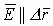, тогда
,
а - не подходит для эквипотенциальных поверхностей.
б) если же тогда
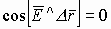,
и , что и требовалось доказать.
Т.е. и должны быть взаимно перпендикулярны для случая  , это единственный вариант расположения этих векторов. Вектора напряженности заряженных тел всегда перпендикулярны эквипотенциальным поверхностям, а значит, всегда перпендикулярны собственной поверхности заряженного тела.
, это единственный вариант расположения этих векторов. Вектора напряженности заряженных тел всегда перпендикулярны эквипотенциальным поверхностям, а значит, всегда перпендикулярны собственной поверхности заряженного тела.
1.9. Теорема Остроградского – Гаусса
Теорема Остроградского - Гаусса касается расчета векторных полей, пересекающих различные поверхности. Лучше эту проблему решить через пример истечения жидкости через поперечное сечение трубы. Чтобы определить количество истекшей жидкости, разбиваем пространство поперечного сечения на маленькие участки S, на которых:
,
а объём истекшей жидкости
.
Из механики
,
где - вектор ориентации поверхности, или нормаль к поверхности.

- эта формула определяет количество жидкости, протекающей со скоростью u за время t через ограниченную поверхность S произвольно ориентированную в пространстве. Тогда вводится понятие потока вектора скоростей через ограниченную поверхность.
Поток вектора скоростей - количество или объем истекающей жидкости в единицу времени (можно назвать это мощностью):
В качестве площади, через которую истекает жидкость, берут её составляющую, перпендикулярную потоку жидкости, т.е.
,
тогда
.
Чтобы определить количество жидкости через всю поверхность S, интегрируем по всей площади, пересекающей поток, тогда полный поток:
Приложения к теореме Остроградского-Гаусса:
Если потоком векторов считать просто количество векторов, проходящих через площадку, пусть есть источник векторов  ; , то из рисунка видно, что количество векторов, проходящих через эти равные площадки различно.
; , то из рисунка видно, что количество векторов, проходящих через эти равные площадки различно.

1) Поток векторов , проходящий через одинаковую площадку , находящуюся на разных расстояниях от источника, не одинаков и зависит от расстояния, т.е. .
Для определения полного потока (общего количества  ), замыкаем поверхность вокруг источника (это сфера). Очевидно, что количество векторов , проходящих через любую замкнутую поверхность есть величина одинаковая.
), замыкаем поверхность вокруг источника (это сфера). Очевидно, что количество векторов , проходящих через любую замкнутую поверхность есть величина одинаковая.
2) Полный поток через замкнутую поверхность есть величина постоянная, т.е.
.
1.10. Теорема Гаусса
Вектор Е (вектор напряженности электрического поля), проходящий через поверхность, можно рассматривать как любой другой вектор в пространстве, поэтому к нему применима вышеизложенная теорема. Тогда для расчета количества векторов Е можно записать:
Если источник поля - положительный заряд, то напряженность электрического поля от него:
.
Если замкнутая поверхность сфера, то напряженность на ее точках есть величина постоянная. Тогда поток вектора Е через замкнутую поверхность от точечного заряда запишется как:
Это есть теорема Гаусса, говорящая, что поток вектора Е через замкнутую поверхность численно равен величине заряда, формирующего электрическое поле, деленного на электрическую постоянную и диэлектрическую проницаемость.
1.10.1. Теорема Гаусса для системы точечных зарядов
Полный поток, через замкнутую поверхность:
Поток вектора Е системы зарядов численно равен сумме зарядов, входящих в систему, деленных на eeo.
1.10.2. Применение теоремы Гаусса к расчетам электростатических полей
- Пусть в качестве заряда есть бесконечная заряженная нить.
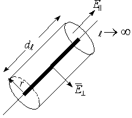Если r<<, то считаем нить бесконечной. Заряд нити бесконечен, qнити® ¥, (® ¥ ).
Ограничим замкнутую поверхность вокруг dl цилиндром с основанием r. Через основание цилиндра количество векторов Е=0, т.к. должен быть перпендикулярен эквипотенциальным поверхностям. Тогда все Е пройдут через боковую поверхность. Вводим характеристику заряда для нити как характеристику заряда на единицу длины, т.е. удельное количество заряда. Эта величина есть линейная плотность заряда t . Значит ; а .
Подставив все выражения, получим:
Это выражение определяет напряженность поля бесконечной заряженной нити в любой точке пространства.
- Расчет напряженностей для заряженной сферы (поле заряженной сферы).
Пусть имеется:
а) Полая сфера или шар из проводящего материала. В обоих случаях заряд распределяется по поверхности по закону Кулона. Тогда по теореме О.-Г.
.
Приравняем интегралы
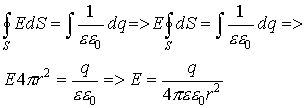
Аналогичным способом рассуждая, полный поток вектора через сферу любого радиуса r определится как:
Окончательно получаем напряженность в любой точке пространства, расположенной вдали от заряженной полой сферы:
б) Если
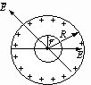Каждый отдельно взятый заряд на поверхности сферы дает силовую линию, которая пересекает сферу радиуса r дважды (со знаком “+” и со знаком “-”, т.е. входящий и выходящий), таким образом результирующее количество векторов Е, пересекающих эту сферу, равно нулю. То есть электрическое поле внутри полой сферы отсутствует.
в) Поле сферы с зарядом, равномерно распределенным по объему.
По закону Кулона (взаимное отталкивание зарядов) в однородном проводящем теле заряды распределяются по поверхности. Поэтому возьмем искусственный случай смеси проводящих элементов в непроводящей массе.
Рассмотрим случай (r > R): Аналогично рассуждая, поток вектора Е через сферу радиуса r определится как:
;
И вновь получим:- напряженность вдали от сплошной заряженной сферы.
Рассмотрим случай (r < R):
По теореме Гаусса поток вектора Е состоит из двух потоков , где - поток векторов, обусловленный внешним кольцом зарядов относительно сферы радиуса , по определению он º 0 (см. пр. тему).
- поток векторов Е внутренних зарядов относительно сферы радиуса r:
,
где - заряд внутри сферы r.Вводится понятие объемной плотности заряда r , т.е. количество заряда в единице объёма, тогда количество заряда внутри сферы r определится как:
,
где r - объемная плотность заряда.По определению:
а также
Окончательно получаем, что величина напряженности в любой точке пространства внутри однородно заряженной сферы:
.
- Поле бесконечной заряженной плоскости.
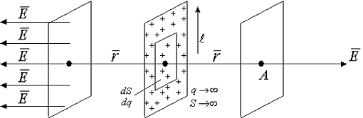Определим напряженность в точке А, находящейся на расстоянии r, много меньшем чем любой геометрический размер плоскости (r < <). Чтобы использовать теорему Гаусса, окружаем плоскость поверхностью, которая представляется двумя плоскостями, параллельными заряженной плоскости, на расстоянии r от неё.
Каждый элементарный заряд на заряженной плоскости дает две силовые линии, пересекающие замыкающие поверхности. Используя положения о перпендикулярности силовых линий к поверхности заряженных тел, получим систему параллельных силовых линий, расположенных по обе стороны от заряженной плоскости.
Поле, характеризующееся параллельными силовыми линиями, называется однородным (так же силовые линии должны быть равными между собой). Тогда по теореме Гаусса поток вектора Е через замкнутую поверхность равен:
.
Введем понятие поверхностной плотности заряда:
, где S – площадь заряженной плоскости.
Тогда количество заряда:
.
Окончательно имеем напряженность вблизи бесконечно заряженной плотности (величина напряженности вблизи бесконечно заряженной плотности не зависит от расстояния):
.
- Поле двух бесконечно заряженных плоскостей.
Пусть имеем
1) разноименно заряженные бесконечные плоскости (понятие бесконечности см. предыдущий раздел).
По принципу суперпозиции определим напряженность от каждой плоскости и сложим:
,
aПоле между плоскостями:
.
Аналогично рассмотрим ситуацию вне плоскостей. По принципу суперпозиции:
- поле снаружи.
Поле для разноименно заряженных пластин между ними присутствует и однородно. Поле вне пластин отсутствует. Такое образование (конструкция) используется в электротехники, как накопитель электрической энергии, называемый конденсатором или электроемкостью.
2) Одинаково заряженные бесконечные пластины:
Если пластины заряжены одним знаком заряда, аналогично рассуждая, получим, что поле между пластинами отсутствует, а вне пластин неоднородно, т.к. распределено во всем окружающем пространстве. Практического применения не имеет.
1.11. Проводник в электрическом поле
Проводник - материальный объект, в котором в естественных условиях имеется множество свободных носителей заряда. Проводником может стать любой объект, если его подвергнуть внешнему воздействию, вызывающему появление свободных носителей заряда.
Любое вещество состоит из атомов, в составе которых находятся заряженные и не заряженные частицы, это электроны, протоны, нейтроны и т.д. Под действием внешних термодинамических условий (температура, облучение) электроны из атома могут вырываться и становиться свободными. Т.е. существует ряд веществ, обладающих избытком свободных электронов (например, металлы), как правило, знак избыточных зарядов в таких проводниках "-" . На практике всегда работают со свободными носителями заряда - электронами.
"Свободные носители заряда" - значит, что при воздействии на физическое тело сколь угодно малой электрической силы свободные носители заряда движутся направленно вдоль направления движущей силы.
1.12. Свойства проводников
1) есть свободные заряды (металлы).
2) напряженность поля внутри проводника равна нулю (см. выше).
3) напряженность поля у поверхности всегда перпендикулярна поверхности.
4) если внутри проводника:
.
Отсюда последовательно можно получить:
.
Математически, если производная от величины (j ) равна нулю по параметру дифференцирования - расстоянию, тогда выражение под знаком дифференциала есть величина постоянная, не зависящая от параметра дифференцирования - от расстояния, т.е. любая точка внутри проводника обладает одинаковым потенциалом. Отсюда следствия:
а) объем проводника эквипотенциальный, внутри проводника.
б) проводник в целом нейтрален, но под воздействием внешних сил двигаются только электроны поскольку атомы, во-первых, обладают много большей массой, а, во-вторых, атомы могут быть закреплены между собой (кристаллическая решетка).
1.13. Индуцирование заряда
Если проводник находится в замкнутой системе, то свободные носители заряда первоначально располагаются хаотично по объему проводника, а затем по закону Кулона расталкиваются и распределяются по всей поверхности проводника.
Чем больше расстояние от центра тела, тем больше скопление заряда. Если проводнику сообщить избыточный заряд, то с наиболее удаленных от центра частей проводника может наблюдаться срыв заряда, если вблизи находится другой проводник (по этому принципу работают молниеотводы).
Если к незаряженному проводнику поднести заряженное тело, то в проводнике произойдет перераспределение заряда в соответствие со знаком поднесенного тела.
В этом заключается принцип индуцирования заряда.
1.14. Проводник во внешнем электрическом поле
По закону Кулона происходит индуцирование заряда на частях поверхности, близких к пластинам конденсатора. Такое перераспределение свободных зарядов по проводнику происходит до тех пор пока величина напряженности внешнего поля (создаваемого пластинами конденсатора), не выровняется величиной напряженности поля, создаваемого перераспределенным зарядом в проводнике.
Перераспределение закончится, когда по первому закону Ньютона результирующая сила равна нулю: при F ¹ 0 заряд перераспределяется; при F = 0 перераспределение прекращается, т.к. / Eвнешнее /=/ Евнутреннее/.
Таким образом, в проводнике, помещенном во внешнее поле, собственно поле как таковое отсутствует. Если внешнее поле увеличить или уменьшить, то перераспределение заряда соответственно усилит или уменьшит величину внутреннего электрического поля, чтобы скомпенсировать внешнее. Т.е. создается ситуация изолированного пространства внутри проводника от внешних воздействий. Этот принцип используется в технике как электростатическая защита для высокоточных приборов, которые нужно изолировать от внешних полей.
1.15. Электроемкость проводника
Если проводнику сообщать избыточный заряд, то величина потенциала на проводнике будет прямо соответствовать величине избыточного заряда (j ~ q).
Величина избыточного заряда зависит от формы проводника. Величина, связывающая заряд и потенциал называется электроемкостью - способностью проводника принимать избыточные заряды.
Если изменять заряды:
Соответственно
.
Величина отношения заряда к потенциалу для проводника данной геометрической формы есть величина постоянная (но зависит от формы проводника), это и есть электроемкость:
.
Рассмотрим электроёмкость проводников различной геометрии:
1) электроемкость уединенного шара.
Тогда в соответствии с определением:
,
где окончательно получаем:
- электроемкость уединенного шара.
Исходя из этой формулы можно сказать, что электроемкость - это функция геометрии тела [C]=1 фарада:
В технике используют кратные единицы:
1мкФ=10-6 Ф, 1нФ=10-9 Ф, 1пФ=10-12 Ф.
2) Электроемкость плоского конденсатора
Поле между обкладками конденсатора однородное, т.е.
.
Аналогично для определяющей формулы можно записать:
.
Итак
- электроемкость плоского конденсатора.
Здесь также очевидно, что электроемкость - функция геометрии тела.
1.16. Соединение конденсаторов
Часто необходимо использовать набор конденсаторов, чтобы создать электроемкость нужного номинала. Для увеличения или уменьшения номинала электрической емкости используют параллельное и последовательное соединение конденсаторов.
Батарея конденсаторов - совокупность соединенных каким-либо образом конденсаторов.
а) параллельное соединение.
При параллельном соединении все обкладки, соединенные металлическим проводником, имеют одинаковый потенциал и представляют собой эквипотенциальную поверхность.
Разность потенциалов между обкладками конденсатора - есть напряжение:

По принципу индуцирования зарядов на противоположной обкладке появится избыток заряда, численно равный по величине первому заряду, но противоположный ему по знаку.
А заряд на каждой из левых обкладок конденсатора составляет сумму зарядов, распределенных от общего заряда q+ как поток (электронов) распределяется по ручейкам (проводникам).

Таким образом, при параллельном соединении конденсаторов общая электроемкость равна сумме емкостей батареи конденсаторов.
б) последовательное соединение.
Величина заряда, переносимая на первую обкладку, индуцирует такой же по величине, но противоположный по знаку заряд на второй обкладке:
| q1+ | = | q2- | = | q3+ | = | q4- | =¼=| qi | ¼ и т.д.
Разность потенциалов на каждой из этих обкладок разная. Известно, что по закону Кирхгофа, сумма падений потенциала (j1 - j2) на элементах замкнутой цепи численно равна напряжению элементов, питающих эту цепь. А падение напряжения на концах не замкнутой цепи численно равно сумме падения напряжения на элементах этой цепи:
Значит, можно записать
При последовательном соединении обратная величина результирующей емкости численно равна сумме обратных величин емкостей, составляющих батарею конденсаторов.
Приложение:
Как правило, в технике используется соединение двух конденсаторов, и чем их больше - тем реже.
а) при параллельном.
б) при последовательном.
,
где
Обобщение: Если требуется увеличить электроемкость, то исходные емкости включаются параллельно, если уменьшить - то последовательно.
1.17. Энергия электростатического поля
Так как электрическое поле способно переносить заряженные тела в пространстве, т.е. совершать работу, значит, можно сказать, что оно обладает энергией.
Wэл=Ar¥ => W - характеристика q, формирующего электрического поля.
Принято за способность заряда совершать работу считать работу по переносу одной половины заряда другой половинной этого же заряда, формирующего поле:
.
Итак - энергия электростатического поля.
Сравни с кинетической энергией:
.
1.17.1. Энергия плоского конденсатора
Используя выражение электроёмкости конденсатора
Sd=V - объем пространства между обкладками конденсатора, а напряженность электрического поля внутри него:
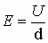.
Тогда получаем
- величина эл. энергии, запасенной между обкладками конденсатора.
Плотность энергии электростатического поля
Здесь обычно пользуются понятием количество энергии в единице объема или плотность энергии:
 .
.
Силы взаимодействия между обкладками конденсатора
Пластины конденсатора заряжены разноименно, значит они притягиваются друг к другу.
Для конденсатора:
,
,
тогда
.
Поскольку между обкладками конденсатора действует сила притяжения, то во избежании нарушения геометрического пространства между обкладками помещают твердое непроводящее тело, так называемый диэлектрик.
1.18. Диэлектрики
В силу строения атомы некоторых элементов в нормальных термодинамических условиях могут отдавать в межатомное пространство валентные электроны, т.е. энергия связи электронов с атомами так слаба, что тепловая энергия отрывает их от атома. Количество свободных электронов в таком веществе может составлять nсв» 1023 эл/см3. Такие вещества называются проводниками или металлами.
У других элементов валентная связь электронов с атомами может быть сильнее Wсвязи > 3кТ/2 . Тогда в межатомном пространстве число свободных электронов очень мало. Некоторая часть свободных электронов в этих веществах обуславливается термодинамическими функциями (отклонения, обусловленные нестандартными причинами, от нормальной ситуации). Процесс отрыва электронов от атомов носит вероятностный характер. Вероятность отрыва электрона от атома тем больше, чем больше энергия внешнего воздействия.
Поэтому в большинстве диэлектриков количество свободных электронов составляет nсв» 1011 эл/см3. Такого количество электронов мало, чтобы вызвать в электрических цепях, включающих диэлектрик ощутимое протекание электрического тока, которое можно зарегистрировать реальными приборами.
Но в целом в таком веществе суммарное количество заряда остается таким же как и в проводящем веществе. Принято вещество с концентрацией носителей заряда 10-21см-3 - 10 -23 см-3 называется проводящим (проводником), а вещество с концентрацией носителей заряда 10 9 - 1012см -3 называется диэлектриком, но это понятие относительно, т.е. если сопряжены два вещества с концентрациями носителей заряда 1018см-3 и 1014 см-3, то первое вещество называется проводником относительно второго, второе - изолятором (диэлектриком) относительно другого (первого).
Любой физический объект материального мира в нормальных термодинамических условиях всегда имеет как минимум 109 см-3 свободных носителей заряда.
Заряды, которые не свободны в диэлектриках, называются связанными, и под действием внешнего электрического поля они также изменяют свое поведение. Диэлектрики бывают полярные и неполярные.
1.18.1. Свойства диэлектриков
Связанные заряды проявляют в диэлектрике свои свойства под действием внешнего электрического поля соблюдая правила:
- связанные заряды не перемещаются по веществу под действием внешнего поля.
- связанные заряды не могут передаваться с одного тела на другое.
В исходном состоянии связанные заряды могут перераспределяться двумя способами:
- общий центр " -" зарядов может совпадать с центром " +" зарядов (например, в атоме центр " +" зарядов (ядро) может совпадать с центром " -" зарядов (центр окружностей вращающихся электронов));
- общий центр " +" зарядов не совпадает с общим центром " -" зарядов.
Тогда первые называются неполярные диэлектрики, а вторые называются полярные диэлектрики: например, Н2, N2, ССl4, CO2, O2, ... , неполярные NaCl, и другие соли - полярные.
1.18.2. Поведение диэлектриков во внешнем электрическом поле
При внесении в электрическое поле диэлектрика его объем приобретает электрический дипольный момент. Это явление называется поляризацией диэлектрика. Дипольный момент характеризуется вектором поляризации - электрическим дипольным моментом единицы объема:
.
Электрическим диполем называется совокупность положительных и отрицательных зарядов, связанных между собой, но разнесенных в пространстве. Расстояние между центрами " +" и " -" зарядов называется плечом диполя. Характеристикой диполя является электрический момент диполя:
.
Направление принято считать по от отрицательного заряда к положительному.
Модель полярного диэлектрика
Объем полярного диэлектрика состоит из хаотически ориентированных дипольных моментов в пространстве так, что в целом диэлектрик нейтрален с точки зрения зарядового состояния. Если задать внешнее поле, т.е. поместить диэлектрик между обкладками конденсатора, тогда во внешнем электрическом поле дипольные моменты (диполи) развернутся вдоль силовых линий, т.е. диэлектрик электризуется. Степень поворота диполей вдоль силовых линий зависит от величины внешнего электрического поля. Такие диэлектрики называются содержащими жесткие диполи.
Модель неполярного диэлектрика
В этом состоянии (исходном) диполи нейтральны. При внесении во внешнее электрическое поле центры " +" и " -" зарядов растягиваются в пространстве.
Появляется дипольный момент (¹ 0), т.е. диэлектрик электризуется. Величина плеча диполя  прямо пропорциональна внешнему электрическому полю. Такие диполи называются упругими. Если снять внешнее электрическое поле, то диэлектрики вернутся в исходное состояние:
прямо пропорциональна внешнему электрическому полю. Такие диполи называются упругими. Если снять внешнее электрическое поле, то диэлектрики вернутся в исходное состояние:

После снятия внешнего поля у неполярных - центры " +" и " -" зарядов сомкнутся, у полярных восстановится хаотическая ориентация диполей. Способность диэлектриков электризоваться под действием внешнего электрического поля называется диэлектрической восприимчивостью .
Можно провести качественный анализ реакции диэлектрика на внешнее поле. Любой диэлектрик отзывается под действием внешнего электрического поля носителями заряда. Удельное количество всех зарядов, задающих электризацию диэлектрика, состоит из отзывающихся свободных и связанных носителей заряда: r = (nсвоб+nсвяз).
Очевидно, что nсвоб »  Eвнеш, а nсвяз ~ Eвнеш, зависит от диэлектрической восприимчивости.
Eвнеш, а nсвяз ~ Eвнеш, зависит от диэлектрической восприимчивости.
r =(
Eвнеш+Eвнеш).Выражение в скобках определяет электризацию диэлектрика и называется диэлектрическим смещением (электрической индукцией D), т.е.
 Eвнеш+Eвнеш= D=Eвнеш× (1+c ),
Eвнеш+Eвнеш= D=Eвнеш× (1+c ),где:
1+ c = - диэлектрическая проницаемость среды.
Тогда P=Eвнеш - поляризованность диэлектрика.
Для обычных диэлектриков c не превышает единиц и десятков единиц. У неполярных c =соnst. У полярных c ~ f(T), где Т - абсолютная температура. (в градусах Кельвина).
1.19. Поток вектора электрического смещения
Исходя из общего правила по теореме Остроградского-Гаусса:
можно записать:

А из предыдущего раздела следует:
. (*)
Если один любой вектор электрического смещения связан с аналогичным вектором напряженности по формуле (*), то можно предположить, что и любой другой вектор электрического смещения связан с вектором Е. И соответственно, множество векторов электрического смещения связано аналогично с соответствующими векторами напряженности.
Множество векторов - поток векторов. Тогда можно записать:
.
Поскольку выражение для потока вектора Е численно определенно для замкнутой поверхности, то потоком вектора электрического смещения называется количество заряда, сосредоточенное внутри замкнутой поверхности. Таким образом, частные формулы силовых характеристик электрического поля можно записать:
| Форма заряда | Напряженность | Эл. индукция (смещение) |
| точечный заряд, сфера r > R | ||
| бесконечная нить | ||
| бесконечная плоскость | ||
| две бесконечные плоскости |  |
1.20. Сегнетоэлектрики и их свойства
Сегнетоэлектрики - класс диэлектриков, обладающий электризованностью в отсутствии внешнего электрического поля.
Если стрелками указать вектора поляризованности, то схематически можно представить
Внешнее поле отсутствует | |
| сегнетоэлектрик 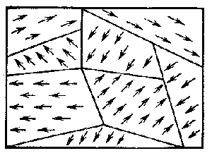 |
обычный диэлектрик |
Если в обычных диэлектриках диполи ориентированны хаотично, то сегнетоэлектриках эти диполи могут группироваться по десять, сто и более штук с параллельно ориентированными диполями. Сегнетоэлектрики - только полярные диэлектрики. Области сегнетоэлектрика с параллельно ориентированными дипольными моментами называется доменами.
При внесении во внешнее электрическое поле сегнетоэлектрик в целом переориентируется в пространстве блоками дипольных моментов и если первоначально при малых напряженностях электрического поля разворот доменов затруднен, то при дальнейшем увеличении Е домены разворачиваются вдоль силовых линий Е как единое целое, а дальнейшее увеличение Е уже не вызывает переориентации диполей, если все домены выстроились вдоль поля.
Сегнетоэлектрик во внешнем электрическом поле.
При снятии внешнего электрического поля многие домены не возвращаются в исходное состояние. Таким образом, сегнетоэлектрик приобретает преимущественную поляризацию в отсутствии внешнего поля.
Свойства сегнетоэлектриков:
а) у обычных диэлектриков e составляет единицы, десятки единиц (c = 1 + e ), у сегнетоэлектриков сотни, тысячи единиц.
б) зависимость поляризованности от внешнего электрического поля нелинейна (тогда, как Р=E для обычных диэлектриков, то есть линейна).
Вид зависимости, представленный на следующем рисунке, для поляризованности диэлектрика от внешнего электрического поля, носит название гистерезиса.
1.20.1. Электрический гистерезис в сегнетоэлектриках
Анализируем схему гистерезиса. Точка (1) характеризуется тем, что последовательное увеличение напряженности внешнего электрического поля Е приводит все к меньшему увеличению поляризованности, дальше после (2) происходит насыщение, т.е. поляризованность не изменяется при увеличении внешнего поля.
Если электрическое поле снимать (уменьшать), то поляризованность уменьшается не так как увеличивалось (3), а при полном снятии электрического поля Е=0 поляризованность сохраняется (P1) - это есть остаточная поляризованность.
Для того, чтобы снять остаточную поляризованность, следует приложить электрическое поле обратной полярности и величина напряженности, при которой поляризованность полностью снимается, численно равна Ес- коэрцитивная сила, возвращающая исходное положение (Р=0). Если увеличивать обратную напряженность (4), то домены переориентируются противоположным образом и при достижении (5) дальнейшее увеличение обратного поля также не приводит к увеличению поляризованности. Снятие обратного поля оставляет в диэлектрике поляризованность (P2), для ее снятия прикладывают силу Е’с и т.д.
Остаточную поляризованность, кроме внешнего поля можно снять нагревом. При нагреве тепловая энергия Q=3кТ/2 сообщается доменами, через них диполям и домены могут разрушатся, т.е. сегнетоэлектрик переходит в обычный диэлектрик с хаотичной ориентацией диполей. Если нагрев снять, то диполи опять, как правило, формируются в домены.
Температуры, при которой домены разрушаются (теряются сегнетоэлектрические свойства) называются температурой Кюри (точкой Кюри). Температура Кюри симметрична относительно нагрева и охлаждения. Потеря и восстановление сегнетоэлектрических свойств происходит при одной температуре. Причиной заставляющей отдельные диполи объединяться в домены, является энергетический выигрыш, т.е. при объединении отдельных диполей при создании доменов высвобождается энергия, что приводит к понижению собственной энергии сегнетоэлектрика.